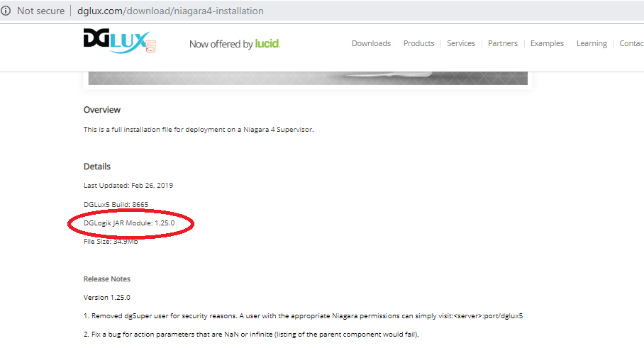
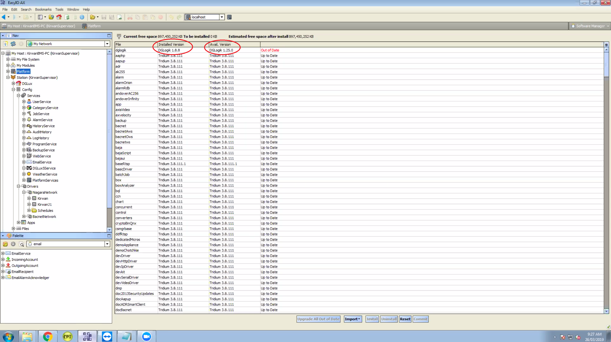

Installing Project Assist
Before installing, Niagara AX and Niagara 4 users must know whether to install the Project Assist Viewer or DGLux5 with the Project Assist template. A Viewer installation includes Project Assist features only. A DGLux5-and-template installation includes the much fuller feature set of DGLux5. You need DGLux5 if you want to do certain advanced tasks related to your Project Assist project, such as creating custom widgets and modifying dataflow. For more information, see this page.
Types of installation are:
-
- Niagara 4 Project Assist Viewer: Local .bat Installation (also works for local SoftJACE)
- Niagara 4 Project Assist Viewer: Local Manual Installation (also works for local SoftJACE)
- Niagara 4 Project Assist Viewer: Remote Installation (also works for remote JACE)
- Niagara 4 DGLux5 with Project Assist Template: Local Installation (also works for local SoftJACE)
- Niagara 4 DGLux5 with Project Assist Template: Remote Installation (also works for remote JACE)
-
- Niagara AX Project Assist Viewer: Remote Installation (can also work for remote JACE)
- Niagara AX DGLux5 with Project Assist Template: Remote Installation (can also work for remote JACE)
- Niagara AX DGLux5 with Project Assist Template: JACE installation (conserves space)
Important
Projects that were created with Project Assist version 8 or earlier cannot be edited in version 10.
Installation for DSA Users
DSA users can install the Project Assist template for DGLux5.
To install the latest version of Project Assist:
- Download the Project Assist template. Requires dglux.com account.
To update DGLux5 to the latest revision, choose sys → Update All Components.
Important
The Project Assist 2.5 template requires DGLux5 revision 8665 or later.
Install the template:
- Choose Project → Export/Import → Import Project.
- Click Choose File, and choose
PA2_main.zip. - Click OK.
Installation for Niagara 4 Users
For either the Project Assist Viewer installation or the DGLux5-and-template installation, Niagara 4 users can install locally or remotely. Local installations can be done via the .bat file or manually.
Niagara 4 Project Assist Viewer: Local .bat Installation
These steps demonstrate how to install the Project Assist Viewer on a local engineering tool, local Niagara 4 supervisor, or local SoftJACE using the .bat file.
- Download the Project Assist 2.5 Viewer (N4) installation file. (Requires dglux.com password)
- Stop all running stations, and close all instances of the engineering tool.
- Change the extension of the distribution file from
.distto.zip. Unzip the file.
If the file unzips successfully, the
installLocalWebContent.batfile appears, along with theniagara_home,niagara_user_home, andMETA-INFdirectories.- If you are using Niagara 4.1, or if your vendor is not Tridium, modify the
.batfile with a text editor:- If you are using Niagara 4.1, change
4.0to4.1 - If your vendor is not Tridium, change
tridiumto the correct vendor name.
- Open a command window, and navigate to the directory that contains the
installLocalWebContent.batfile. - In the command window, type
installLocalWebContent. When prompted, choose a directory installation.
The
niagara_user_homedirectory is now installed.- Find the
niagara_home\modules\dglogik.jarfile, and placedglogik.jarin the Niagara 4 modules directory. Typically, this isC:\Niagara\Niagara-4.n.nnn\modules\. - Add the DGLux5 Service:
- Open the DGLogik Palette in the engineering tool.
- Copy and paste the
DGLux5Serviceobject under theServicesnode in the station database (station:|slot:/Services).
- Go to
<server>:port/dglux5, for examplelocalhost:8080/dglux5. - In the Licensing dialog, submit a license request, including the license type. The license type is either JACE, Supervisor, or Unlimited.
Niagara 4 Project Assist Viewer: Local Manual Installation
If installation using the .bat file does not work properly, you can install manually. Before you can install manually, it's a good idea to enable showing hidden folders:
To install manually:
- Download the Project Assist 2.5 Viewer (N4) installation file. (Requires dglux.com password)
- Stop all running stations, and close all instances of the engineering tool.
- Change the extension of your distribution file from
.distto.zip. - Unzip the file.
Find the
niagara_user_home\shared\dglux5folder, and move it toC:\ProgramData\Niagara4\Tridium\Shared\.ProgramDatais a hidden directory and can be seen inC:\only if you have enabled showing hidden folders.- Find the
niagara_home\modules\dglogik.jarfile, and placedglogik.jarin the Niagara 4modulesdirectory. Typically, this isC:\Niagara\Niagara-4.n.nnn\modules\. - Add the DGLux5 Service:
- Open the DGLogik Palette in the engineering tool.
- Copy and paste the
DGLux5Serviceobject under theServicesnode in the station database (station:|slot:/Services).
- Go to
<server>:port/dglux5, for examplelocalhost:8080/dglux5. - In the Licensing dialog, submit a license request, including the license type. The license type is either JACE, Supervisor, or Unlimited.
Niagara 4 Project Assist Viewer: Remote Installation
The following steps demonstrate how to install the Project Assist Viewer on a remote computer or on a remote JACE.
- Download the Project Assist 2.5 Viewer (N4) installation file. (Requires dglux.com password)
- Stop all running stations.
- Open the remote platform.
- Open the Distribution File Installer in the remote platform.
- When prompted, navigate to the
.distfile on your local computer, and click Install. - Start the station.
- Add the DGLux5 Service:
- Open the DGLogik Palette in the engineering tool.
- Copy and paste the
DGLux5Serviceobject under theServicesnode in the station database (station:|slot:/Services).
- Go to
<server>:port/dglux5, for examplelocalhost:8080/dglux5. - In the Licensing dialog, submit a license request, including the license type. The license type is either JACE, Supervisor, or Unlimited.
Niagara 4 DGLux5 with Project Assist Template: Local Installation
The Project Assist 2.5 template requires DGLux5 revision 8665 or later. Updating to revision 8665 or later requires reinstalling DGLux5. Reinstalling ensures that the module, JAR file, HVAC2 library, and DGLux5 version are all updated.
- Download the DGLux5 Niagara 4 installation file. (Requires dglux.com password)
- Download the Project Assist template. (Requires dglux.com password)
- Reinstall DGLux5 locally using the .bat file or a manual installation.
- Install the template:
- Choose Project > Export/Import > Import Project.
- Click Choose File, and choose
PA2.zip. - Click OK.
Niagara 4 DGLux5 with Project Assist Template: Remote Installation
The Project Assist 2.5 template requires DGLux5 revision 8665 or later. Updating to revision 8665 or later requires reinstalling DGLux5. Reinstalling ensures that the module, JAR file, HVAC2 library, and DGLux5 version are all updated.
- Download the DGLux5 Niagara 4 installation file. (Requires dglux.com password)
- Download the Project Assist template. (Requires dglux.com password)
- Reinstall DGLux5 remotely.
- Install the template:
- Choose Project > Export/Import > Import Project.
- Click Choose File, and choose
PA2.zip. - Click OK.
Installation for Niagara AX Users
For either the Project Assist Viewer installation or the template installation, Niagara AX users can install on a local workstation, remote station, or JACE device.
Niagara AX Project Assist Viewer: Local Installation
The following video demonstrates how to install the Project Assist Viewer on a local workstation.
To install the Project Assist viewer on a local workstation:
- Download the Project Assist 2.0 Viewer (AX) installation file. (Requires dglux.com password)
- Stop all running stations, and close all instances of the engineering tool.
- Change the extension of the installation file from
.distto.zip. - Unzip the file.
- Move the
dglux5andmodulesdirectories to the system root directory of the version of Niagara being used. Typically, this isC:\Niagara\Niagara-3.n.nnn\, where3.n.nnnis the Niagara version number. - When prompted to merge the
modulesdirectories, select Yes. - Start the station.
- Add the DGLux5 Service:
If your Niagara Workbench environment does not already include the Palette, add the Palette by selecting Windows > Sidebars > Palette, as shown in the following image.
In the palette, browse to the
dglogikmodule, as shown in the following image, and click OK.The
DGLuxServicemodule is added to the Palette.Drag the
DGLux5Servicemodule from the Palette, and drop it on theServicesnode in the station database in the panel above (station:|slot:/Services), as shown in the following image.
- Go to
<server>:port/dglux5, for examplelocalhost:8080/dglux5. In the Licensing dialog, shown in the following image, submit a license request.
The license type is either JACE, Supervisor, or Unlimited.


Niagara AX Project Assist Viewer: Remote Installation
The following steps demonstrate how to install the Project Assist Viewer on a remote computer or on a remote JACE device with sufficient space. The Viewer requires 56.1 MB of storage.
- Download the Project Assist 2.5 Viewer (AX) installation file. (Requires dglux.com password)
- Stop all running stations.
- Open the remote platform.
- Open the Distribution File Installer in the remote platform. When prompted, navigate to the
.distfile on your local computer, and click Install. - Start the station.
- Add the DGLux5 Service:
- If your Niagara Workbench environment does not already include the Palette, add the Palette by selecting Windows > Sidebars > Palette.
In the Palette, browse to the
dglogikmodule, and click OK.The
DGLuxServicemodule is added to the Palette.- Drag the
DGLux5Servicemodule from the Palette, and drop it on theServicesnode in the station database in the panel above (station:|slot:/Services).
- Go to
<server>:port/dglux5, for examplelocalhost:8080/dglux5. In the Licensing dialog, submit a license request.
The license type is either JACE, Supervisor, or Unlimited.
Niagara AX DGLux5 with Project Assist Template: Local Installation
The Project Assist 2.5 template requires DGLux5 revision 8665 or later. Updating to revision 8665 or later requires reinstalling DGLux5. Reinstalling ensures that the module, JAR file, HVAC2 library, and DGLux5 version are all updated.
- Download the DGLux5 Niagara AX Supervisor installation file. (Requires dglux.com password)
- Download the Project Assist 2.5 template. (Requires dglux.com password)
- Install the template:
- In DGLux5, choose Project > Export/Import > Import Project.
- Click Choose File, and choose
PA2.zip. - Click OK.
Niagara AX DGLux5 with Project Assist Template: Remote Installation
The Project Assist 2.5 template requires DGLux5 revision 8665 or later. Updating to revision 8665 or later requires reinstalling DGLux5. Reinstalling ensures that the module, JAR file, HVAC2 library, and DGLux5 version are all updated.
- Download the DGLux5 Niagara AX Supervisor installation file. (Requires dglux.com password)
- Download the Project Assist 2.5 template. (Requires dglux.com password)
- Install the template:
- In DGLux5, choose Project > Export/Import > Import Project.
- Click Choose File, and choose
PA2.zip. - Click OK.
Niagara AX DGLux5 with Project Assist Template: JACE Installation
The Project Assist 2.5 template requires DGLux5 revision 8665 or later. Updating to revision 8665 or later requires reinstalling DGLux5. Reinstalling ensures that the module, JAR file, HVAC2 library, and DGLux5 version are all updated.
- Download the DGLux5 AX JACE installation file. (Requires dglux.com password)
- Download the Project Assist 2.5 template. (Requires dglux.com password)
- Install the template:
- In DGLux5, choose Project > Export/Import > Import Project.
- Click Choose File, and choose
PA2.zip. - Click OK.
Upgrading to Project Assist 2.5
To upgrade to Project Assist 2.5, you must have revision 8665 or higher of DGLux5. If you need to upgrade DGLux5, see http://wiki.dglux.com/dglux5_wiki:installation:updating for details.
Download the Project Assist template.
Notes
- If both templates have the same name, the new template replaces the old one.
- This installation replaces both the
PA2project and theHVAC2library.
Upgrading Project Assist
- Download the installer zip file.
- In DGLux5, choose Project > Export/Import > Import Project and import the downloaded zip file.
NOTE: If your Project Assist 2.X project is not named PA2, unzip the downloaded installer, rename its PA2 project folder to match your Project Assist project folder, and re-zip the contents of the downloaded zip file before importing it.
Upgrading Project Assist Viewer
For details about upgrading Project Assist Viewer, see http://wiki.dglux.com/dglux5_wiki:project_assist:2_0_v10:installation:home
If you need to install the upgrade manually, download and unzip the upgrade and copy its “app” and “proj” folders to your DGLux5 installation, overwriting the folders that are there. If you are installing on Windows 10, note that the DGLux5 /proj folder resides under the \Users\<yourusername> directory. In Niagara, update the dglogik module using the dglogik.jar file from the upgrade zip file.
Updating Project Assist Viewer on Niagara
Latest PA Viewer Build
Download the latest PA viewer here https://dglogik.com/download.
Prerequisites
- Change the extension of the distribution file from
.distto.zip. - Unzip the folder.
- Stop all the instances before updating.
- Back up of all your projects (How to Import and Export Files (PA))
Update Project Assist Viewer (Local System)
General approach
This section covers the process of how to replace dglogik.jar and override app and proj folders.
- Download the latest PA Viewer and unzip it.
- Copy dglogik.jar form
<unzipped location>\pa-viewer-n4-*niagara_home\modulesto Niagara 4 modules directory (typically, this is<Niagara installation folder>\modules). - Override app and proj from an unzipped folder (
<unzipped location>\pa-viewer-n4-*\niagara_user_home\shared\dglux5) to Tridium or Distech shared folder, typically it would be<Niagara Installation Folder>\<Tridium or Distech>\Shared\dglux5. Note: overwrite the old folder to keep custom files that were created there. Don't delete it.
An alternative approach
This section describes an alternative approach when the above steps don't work.
Step 1: Export user project content from PA2 viewer
- Open PA viewer.
- Click on Settings and select Export File.
- Select the contents from the project's Export panel and click on Export.
- The file is exported on your local drive.
Step 2: Copy node folder from the exported file and overwrite with the latest downloaded PA Viewer
- Unzip and open the file exported on Step 1.
- Copy the node folder from
<unzipped folder>\PA\nodeand copy over the node folder to<unzipped-downloaded folder>\niagara_user_home\shared\dglux5\proj\dglogik-project_assist_2\PA. It overwrites the existing node folder. - Now your project content is copied or updated to the latest PA Viewer.
Step 3: Updating your existing PA viewer project with modified latest downloaded PA viewer dglux5 and dglogik.jar
- After performing above Steps 1 & 2, latest PA is loaded with user's project content. Move or copy the modified latest downloaded PA Viewer dglux5 folder to your project path.
- Copy dglogik.jar form
<unzipped modified downloaded location>\pa-viewer-n4-*\niagara_home\modulesto Niagara 4 modules directory (typically,<Niagara installation folder>\module). - Copy
\dglux5folder from<unzipped modified downloaded location>niagara_user_home\sharedand move it to<Niagara Installation Folder>\<Tridium or Distech>\Tridium\Shared
Update Project Assist Viewer (Remote - JACE)
The above 2 approaches work for JACE and remote servers as well. However, in this case, you need to use FTP tools to update the PA Viewer manually.
Updating only Project Assist Viewer JAR File (Not the UI) on JACE and Locally
- Perform the installation on a local machine.
- Start workbench and navigate to Nav / Host / Platform / Software Manager.
- Verify that Avail.Version is the latest version. Please visit http://dglux.com/download/niagara4-installation for details

- In case, versions don't match between Avail.Version and http://dglux.com/download/niagara4-installation, please download it on your local machine and import it.

- In the Software Manager view,
dglogik.jarshould be marked as Out of Date. Select just that row. - Press the Upgrade button.
- Press the Commit button.
- Accept all the further steps.